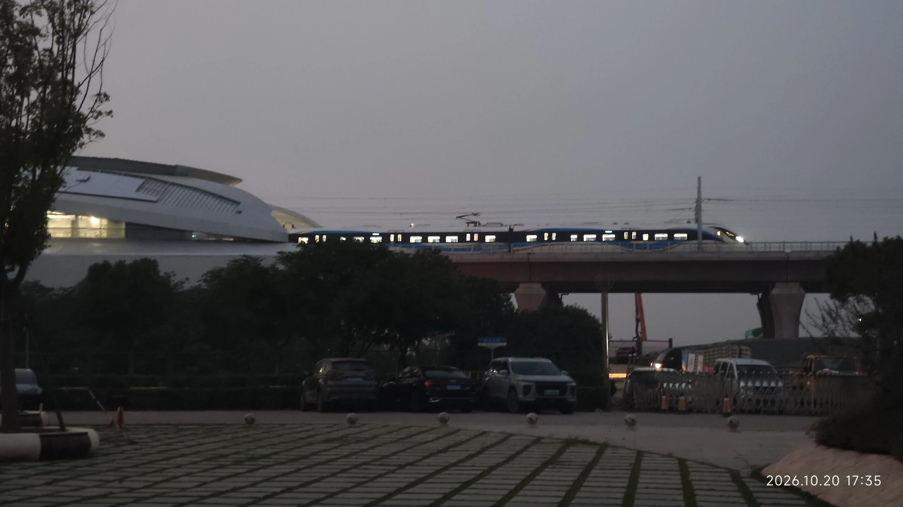
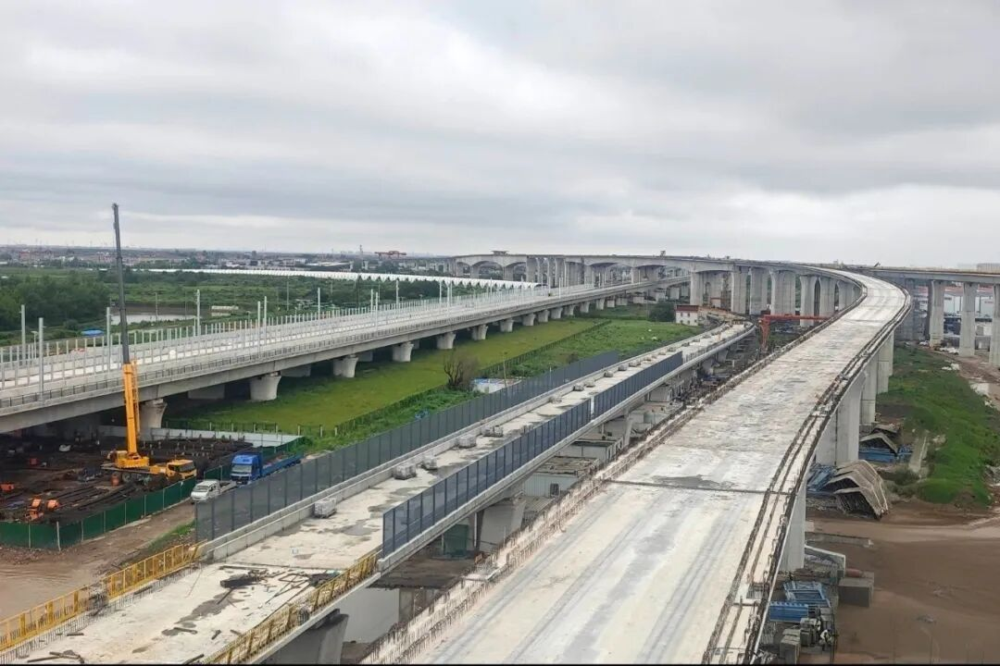
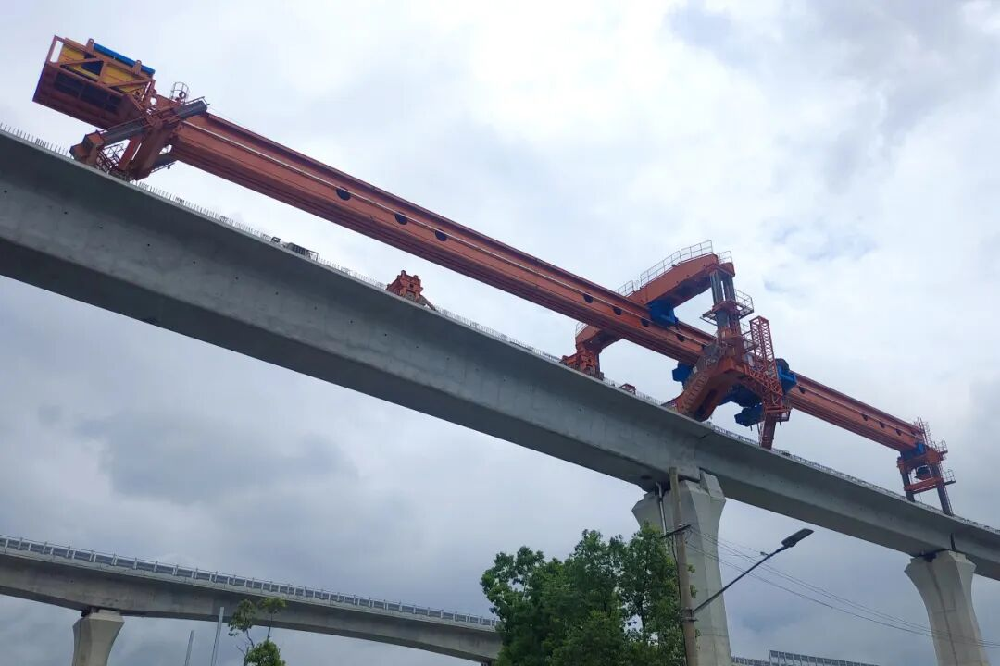

上海临港 · 滴水湖
热滑完成、首列车进厂，明年7月的通车目标又近了一步。
10月19日，上海市交通委通报：国庆假期期间，市域铁路南汇支线热滑试验顺利完成，线路正式由建设阶段转入联调联试、试运行准备阶段。
8月21日市政府新闻发布会上，临港新片区管委会专职副主任唐浩给出的时间表是：明年7月，南汇支线建成通车。
国庆前，铁路迷的视频先传开了：首列交付列车深夜开进下盐路车辆基地。
国庆后，官方消息接上：热滑试验完成。
10月20日傍晚，更有网友在临港拍到了列车试跑的身姿——车窗亮着灯，从新站旁的高架上驶过。
一条修了五年的市域铁路，正在按自己的节奏收尾。

2026年10月20日17:35，南汇支线列车试跑通过临港段高架。图源：网友「图鉴攻城狮」摄
01
一年半，六个节点
南汇支线全长34.86公里，6座车站，设计时速160公里。主线从浦东T3航站楼站引出，接上海东站的东支线在下盐路并入，终点滴水湖北站，是地下站。
把它一年半的关键节点排开，进度一目了然：
| 2025.11 | 主线结构先行贯通 |
| 2026.06.17 | 全线长轨铺设收官：铺轨39.1公里，焊接接头382个 |
| 2026.08.15 | 最后一榀箱梁落位，主线、支线全线结构贯通，664榀箱梁全部架完 |
| 2026.09.03 | 沿线变电所完成受电启动，进入机电安装与设备调试 |
| 2026.09.26 | 首列列车运抵下盐路车辆基地 |
| 2026.10.01-08 | 国庆期间首次热滑试验完成 |
时间线来源：上海市交通委历次通报、上观新闻。9月26日列车到基地一条来自动车组数据库与公开的运输记录，官方尚未发布正式消息，这里如实标注。

建设中的南汇支线高架段。图源：上海申铁
02
热滑是个什么活
通俗讲，就是让车在带电的接触网下真正跑起来，看电弓和电线处不处得来。
这次试验时速60公里，用的是新型全自动热滑检测车，实时测弓力、导高值、拉出值、硬点、拉弧这些指标。
别小看这一跑。跑通了，说明轨道、接触网、信号三个系统第一次动态匹配上了；跑不通，哪个环节有问题就地排查。
这次的难点是跨线。检测车从机场联络线浦东1号、2号航站楼站出发，途经3号航站楼站，再转入南汇支线的下盐路站、东大公路站区段，全网段跨线热滑，不是单线自己测自己。

南汇支线箱梁架设现场，664榀箱梁已全部架完。图源：上海申铁
往前数，冷滑阶段先做过限界检查、轮轨测试、弓网接触测试，查出的问题清单化整改，才轮到热滑上场。
市交通委的通报里写得很直白：下一步盯的就是联调联试、列车试运行这两个关键节点。
翻成人话：轨道通了、电通了、车到了，接下来要把所有系统放在一起反复练，练到位才载客。
03
通车以后，日子怎么变
规划里的时空目标：临港主要节点15分钟到浦东枢纽、60分钟到虹桥枢纽。南汇支线与机场联络线在T3航站楼站贯通运营，理论上车不停人不换，一路到虹桥。
终点站是滴水湖北站——地下站，顶板开了四处钢结构天窗，寓意“临港晨露”。它是南汇支线的站，和16号线滴水湖站不是同一座，开通后怎么接驳，等公交方案出来，别先按“出站换乘”打算。
眼下的变化已经落地：9月28日起，16号线工作日午间增开2班直达车，12:30双向发车，龙阳路到滴水湖全程约34分钟，工作日直达车增至6班。
| 龙阳路 → 滴水湖 | 7:30、7:45、12:30 |
| 滴水湖 → 龙阳路 | 12:30、17:20、18:00 |
04
把话说准：还没定的事
一，热滑不等于马上通车。后面还有联调联试、试运行，每一步都要时间。目前没有官方公布的试运行日期。
二，“明年7月”是发布会口径。出自8月21日市政府新闻发布会，具体哪天开，等官宣。
三，15分钟是规划目标。对应大站快车，站站停会慢，赶飞机按保守时间留余量。
四，首列车到基地来自民间记录。动车组数据库显示这批车为4编组、共8列，与机场联络线、南枫线可跨线运营——这是爱好者整理的口径，等官方通稿对表。
从2021年底开工到今天，南汇支线修了快五年。结构、轨道、供电、车辆、热滑，一块块拼图归位。
剩下的两块，联调联试和试运行，就是载客前的最后两块。
通车后第一趟，你想坐去哪儿？
评论区聊聊。这条线有新进展，我们还会继续跟。
本文信息截至2026年10月28日。来源：上海市交通委、上海发布、上观新闻、新华社。